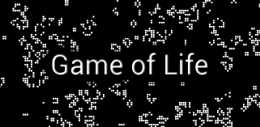

PROJECTS
Here you will find some of the personal and client projects that I created with each project containing its own case study.
Simulación de la Tinka
This project simulates the Tinka lottery system in C++. The user can choose a set of numbers and check if they match with the randomly generated winning numbers.
View ProjectEncuentra al Reno

In this C++ project, the user has to find the hidden reindeer in a virtual grid, using clues to locate its position.
View ProjectJuego de la Vida de Conway
This C++ project is a simulation of Conway's Game of Life. It models cellular automata where cells live, die, or reproduce based on a set of rules.
View Project